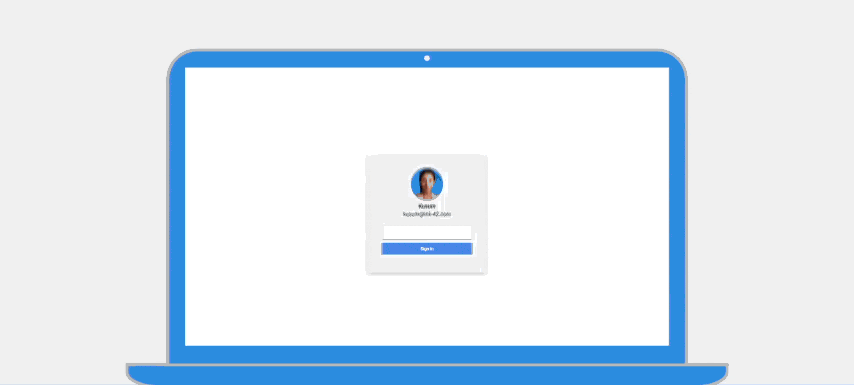
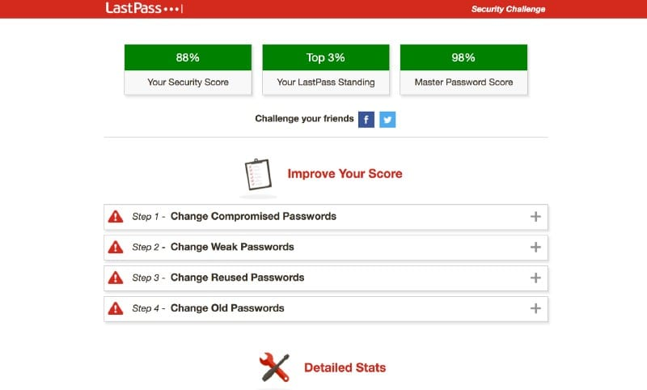
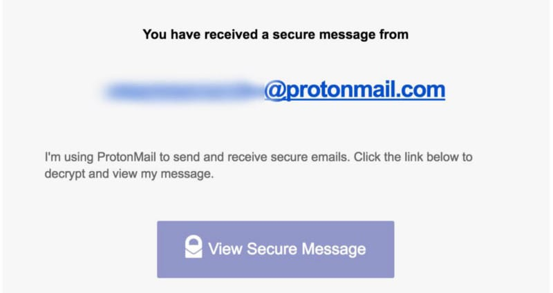

Article Title Also Goes Here
Last year’s digital security mishaps brought privacy to the forefront of our attention. Ironically, some of the most notable digital security unravellings of 2016 could have been mitigated by following basic privacy practices.
At Evolve, most of my normal work is as far away from “mission-critical” as it gets—building brochure websites and running social campaigns for local businesses. Still, I consider the below list “standard procedure” when it comes to protecting my client’s data.
1. Use 2-Factor Authentication
Mitigate brute-force attempts on your password authentication.
Just about every major platform—from social platforms like Facebook and Twitter to business services like cloud hosting providers and distributed network solutions—provide some variation of 2-factor authentication (2FA).
If this is your first time hearing about 2FA, here’s the down-n-dirty: when you enter your password on a website or application, said service will then prompt you for an additional “one-time password” (OTP). These OTPs can be sent to your phone via SMS, generated on your phone via a 2FA app, or even generated on a hardware solution like YubiKey.
 My current go-to for 2FA is a YubiKey OTP setup.Yes, activating 2FA on your accounts will mean that you are entering essentially double the number of passwords to access your account; digital security and convenience are not necessarily mutually exclusive, but they are often at odds with one-another, trading-off as you scale one or the other. My next suggestion, however, will increase both security and convenience.
2. Use a Reputable Password Manager
Increase security and convenience for yourself and your business.
I prefer LastPass, but there are a plethora of other personal and enterprise-ready password managers out there; most have a free version. Essentially, a password manager does exactly what the name would imply—it helps manage all the different passwords you may have across various social platforms, forums, and even sensitive accounts like online banking portals.
 My LastPass ‘Security Challenge’ score, as of April 30, 2017.Some software, like LastPass, will even filter through all of your account information to look for security weaknesses (shown above). This makes it extraordinarily easy for the average user to set one universal password, while maintaining a diverse set of unique passwords for each account—and the best part is you never have to remember more than one password again.
3. Encrypt Your Online Communication
You don’t have to be a cypherpunk to use Signal and encrypted email.
I think most people would be surprised at how accessible strong encryption can be. I would be willing to bet the word “encryption” scares away a good chunk of people from even trying—it sounds complex.
Encryption is for everyone now.
Why not get setup with professional-grade encrypted instant messaging and email right now? Download the ultra-secure Signal, for Android or iOS, then have your friends download it; you can even share photos and video securely.
After that, create an account on ProtonMail to easily encrypt your email for free. It is just as easy as Gmail to setup, but leaps and bounds more secure. Your inbox will be encrypted by default, while your messages have an option to be encrypted with a password. The message can be sent to any email address, including non-ProtonMail accounts, and the password can be communicated using a separate secure channel like Signal (or courier bird). The photo above shows what receiving an encrypted message from ProtonMail looks like—your message even has an expiration date for added security.
 “ProtonMail is the world’s largest secure email service, developed by CERN and MIT.”Okay, I get it—maybe not all of you need “this much” digital security—your OpSec game is as strong as needed for protecting your cat photos and meme library. But if you could increase your security by factors of ten, while, at worst, encountering nominal inconvenience, wouldn’t you?
Let me know by emailing me directly at elijah@eyi.io or tweeting at me @elijah_io—thanks for reading!
Elijah Kleinsmith is a digital producer living in Kansas City, Missouri. He is also the Founder of Evolve Your Identity. In his free time, Elijah flies drones, builds websites, and researches digital security. Visit his personal website.